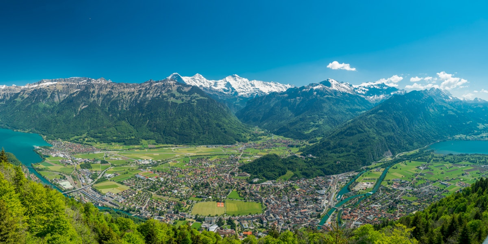

Interlaken located at the foot of the famous Jungfrau peak, this famous tourist town in Switzerland is the only way to reach Jungfrau. In addition to its lakes and mountains, the architecture of Interlaken is also very attractive. Its small and lovely wooden houses and colorful tiles make visitors feel like they are in a fairy tale world.
previous | next